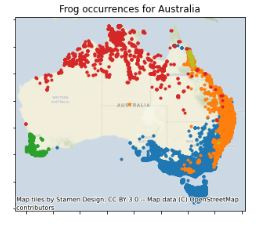
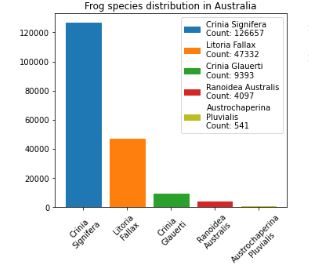
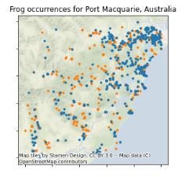
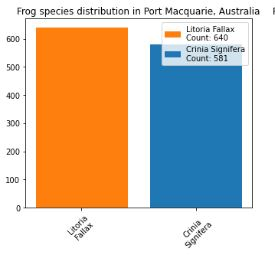
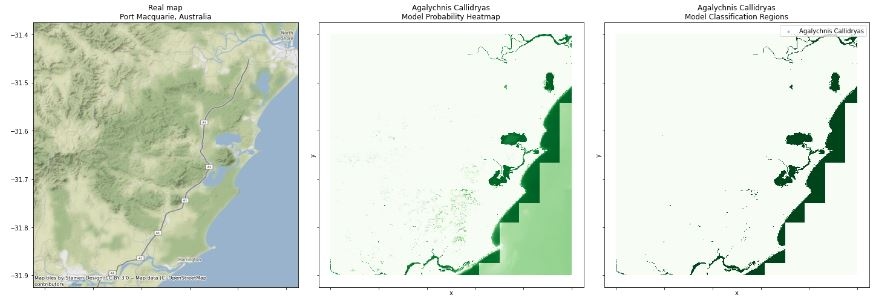
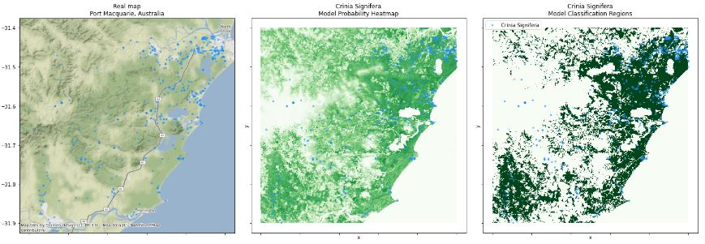
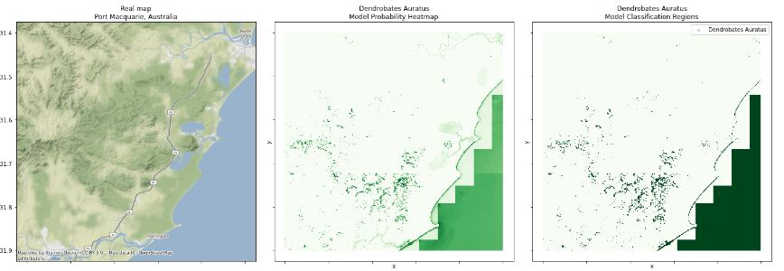
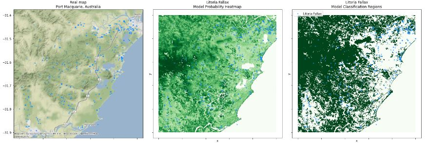

Bio Indicator Species Estimation
Occurences of 5 types species of frogs in the Australia Region

Count of 5 species in the Australia Region

Let's view frog Occurences over one region

Occurences distribution of frog over this region

Occurence Prediction of Agalychnis Callidryas species over selected region

Occurence Prediction of Crinia Signifera species over selected region

Occurence Prediction of Dendrobates Auratus species over selected region

Occurence Prediction of Litoria Fallax species over selected region
